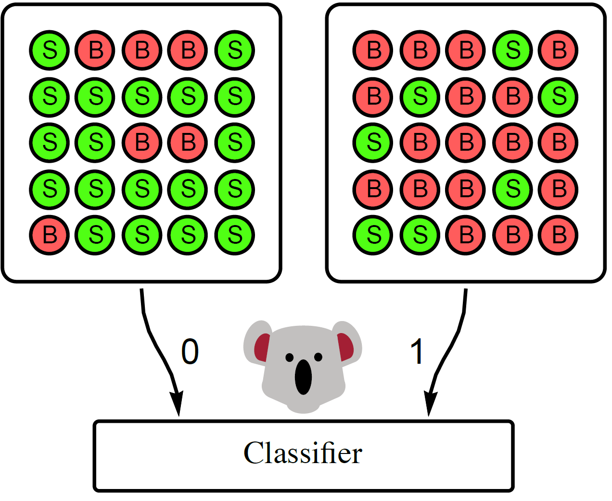
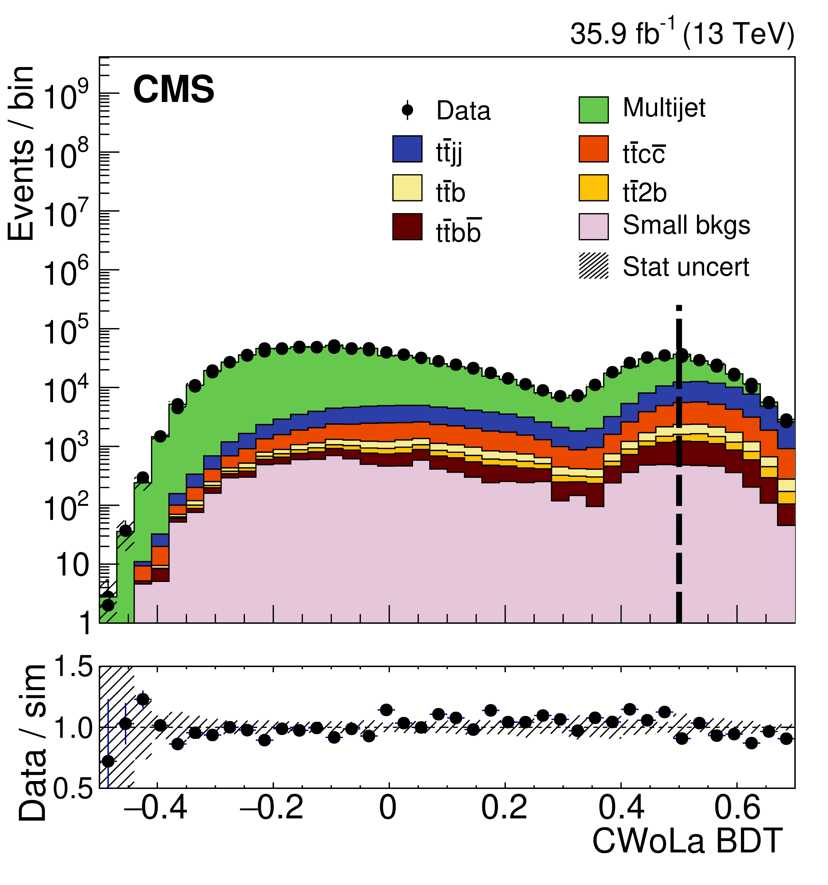

Classification at Colliders
There’s been a lot of recent interest in applying classification techniques from machine learning to particle physics. Methods from image recognition, natural language processing, and point cloud identification have outperformed expert-designed algorithms for a variety of collider tasks.
But there’s a problem: collisions at the LHC don’t come with labels. Unlike photos or handwritten digits, you can’t recruit an army of volunteers to see whether a Higgs boson was produced (before decaying) in a collision. All you have is the complicated mozaic of particles that ultimately hits your detector. So then how do you get labeled training data to feed your classifiers?
In particle physics, this problem is dodged by relying heavily on simulated events for labels. You can peer into the inner workings of the simulation and see what particles were produced in the collision. While these simulations are excellent, they can badly mismodel the subtle correlations among the thousands of particles in a collision event.
Reliance on simulation is troubling for machine learning in particle physics, as models can learn these mismodeled details. There’s no substitute for real data.
Here, I’ll discuss how to overcome the need for simulation and train classifiers directly on real collider data. It’s a simple and fun story.
Training on Data?
Let’s get right to the key ideas. As I mentioned, they’re all pretty simple.
1. The Likelihood Ratio as the Optimal Classifier
Say you want to classify category $A$ from category $B$ using features ${\bf x}$. We know, thanks to Neyman and Pearson, that the optimal classifier to do the job is the likelihood ratio: $$ L_{A/B}({\bf x}) = p_A({\bf x})/p_B({\bf x}),$$ where $p_A({\bf x})$ and $p_B({\bf x})$ are the probability densities of ${\bf x}$ in the two categories.
The $A$/$B$ likelihood ratio (or anything monotonically related to it!) is what we’re after if we want a great classifier. If we had labels for our data, we could train any classifier in the usual way to get an approximation of the likelihood ratio. But in particle physics, we just don’t have those labels.
2. Collider Data as Statistical Mixtures
Instead, what we can often measure at colliders are statistical mixtures of the two classes with some fraction $f$. We can write this mathematically as: $$ p_{M}({\bf x}) = f p_A({\bf x}) + (1-f) p_B({\bf x}). $$
By slicing and dicing our data in different ways, we can get different mixtures with different fractions. For example, consider classifying collision debris (jets) from high-energy quarks versus gluons. As quarks are electrically charged, they are more likely to be produced together with an energetic photon. Looking for this photon gives you a mixture with a higher fraction of quarks than gluons.
Now, let’s see what the optimal classifier is to classify one mixture from another. Again, it’s simply the likelihood ratio of the two mixtures:
$$ L_{M_1/M_2}({\bf x}) = \frac{f_1 p_A({\bf x}) + (1-f_1) p_B({\bf x})}{f_2 p_A({\bf x}) + (1-f_2) p_B({\bf x})} = \frac{f_1 L_{A/B}({\bf x}) + (1-f_1)}{f_2 L_{A/B}({\bf x}) + (1-f_2)}.$$
This is monotonically related to $L_{A/B}({\bf x})$, and so it defines the same classifier!
In other words: train a classifier to tell apart the two mixtures and you’ll get a great classifier for the underlying categories. By using the mixtures, you don’t need the underlying labels! You don’t even need to know the mixture fractions.
3. Classifying Mixtures as Classifying Categories
Let’s summarize what we learned as a theorem. I’ll explain the funny name later.
Koala Theorem: The optimal classifier between two different mixtures of categories $A$ and $B$ is also the optimal classifier between $A$ and $B$.
This result is pretty intuitive.
Say you have two baskets of exotic fruits: one is more rich in foos and the other in bars.
Your best guess of which basket a fruit came from is simply your best guess of whether it is a foo or a bar.
This simple idea has also appeared previously for learning from noisy labels.
Classification Without Labels
Our classification without labels or CWoLa (“koala”, as in the furry marsupial) technique for training on real data is based directly on this idea. Simply slice and dice your data into several mixtures, and train a classifier to tell them apart.
Here’s a cartoon of a koala learning to tell apart signal $S$ from background $B$.

The koala, even with its notoriously tiny brain, learns how to classify the two categories simply by being trained to classify the mixtures from each other.
There are assumptions for CWoLa to work, and it’s worth spelling them out:
- Different Fractions: The two mixtures have different fractions, $f_1\neq f_2$.
- Sample Independence: Category $A$ is identical in the mixtures. Same for $B$.
The first point says that you can’t just randomly split your data in half. The second point says that the slicing and dicing shouldn’t affect the distribution of features ${\bf x}$ in categories $A$ and $B$. In our two papers, we make concrete proposals for ways to meet these requirements in cases of interest, but that’s all there is to this idea for training classifiers on collider data.
Our method was recently applied to real data by the CMS collaboration for their measurement of the $t\bar tb\bar b$ cross section. By applying CWoLa (“training a koala”?) in an interesting way, they trained a boosted decision tree (BDT) to classify $t\bar t b \bar b$ events (with two top and two bottom quarks) from the background.
To my knowledge, this is the first classifier trained directly on real LHC data!